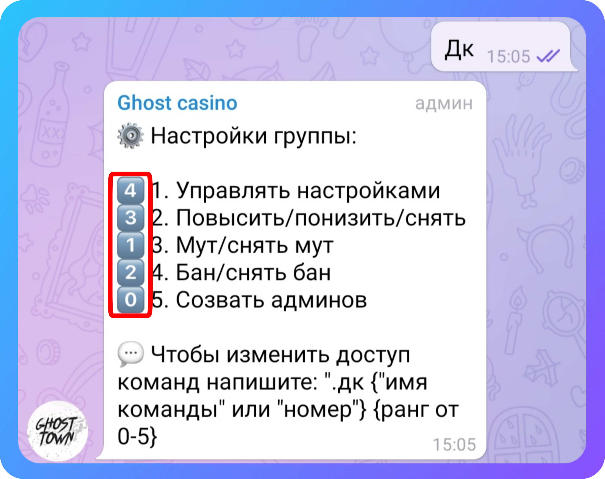

Команды модерирования
・ Админы — покажет список админов группы.
・ Повысить — повысит человека на 1 ранг.
・ понизить — понизит человека на 1 ранг.
・ Снять — разжалует человека.
・ Снять всех — разжалует всех админов кроме создателей.
・ дк — настройка доступа команд. цифры в смайлике означает с какого ранга доступна команда

・ Бан {ответ на сообщение или @user} — блокирует пользователя навсегда.

・ Разбан {ответ на сообщение или @user} — снимает блокировку с пользователя.
・ Мут {время} — даст мут пользователю.
・ Чат инфо — покажет информацию о группе.
・ Чат айди — покажет ID группы.
・ Стата — покажет статистику по сообщениям за сегодня.
・ Вся стата — покажет статистику по сообщениям за все время.
・ Правила — посмотреть текущие правила группы.
・ +правила <текст> — установка правил в группе.
・ -правила — удалить правила группы.
・ -смс {ответ на сообщение} — удалить сообщение.
・ +варн {ответ на сообщение или @user} — выдать предупреждение.
・ -варн {ответ на сообщение или @user} — снять предупреждение.
・ Передать создателя {ответ на сообщение} — передать создателя чата.
・ Восстановить создателя — вернуть первоначального создателя.